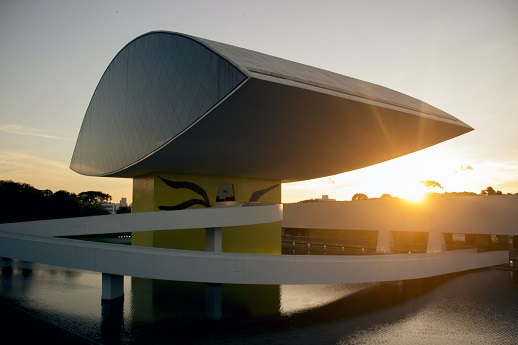

Engenharia Civil #1
A engenharia civil é o ramo da engenharia que planeja, projeta, executa e gerencia obras e empreendimentos. A engenharia civil transforma e adapta a natureza, com o objetivo de otimizar a qualidade de vida das pessoas. Desta forma, esta área dedica-se à construção de edifícios, pontes, túneis, usinas geradoras de energia, indústrias e inúmeros outros tipos de estrutura, utilizando como ferramentas as ciências, a matemática, instrumentos, tecnologias e técnicas diversas, experiências anteriores, o cabedal normativo e as práticas locais, levando em conta os contextos social, econômico e ambiental.